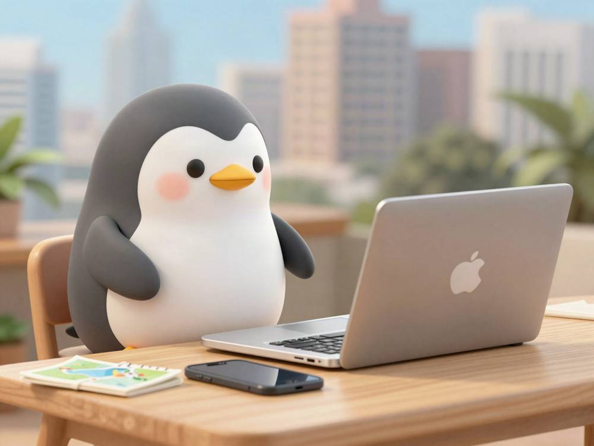

The 3 tools I used on the university visit trip to Malaysia 🧰

These are the 3 tools I used on this university visit trip to Malaysia 🐧
GitHub — It is the place where I put all the data. My sister's high school grades, the documents about going on to university that she got from her high school, the information about each candidate university, the latest chat history, and so on. I put in anything. Because I manage the information on GitHub (in the cloud), I can organize and check it from my phone and from my computer.
A good thing about GitHub is that it keeps a version history. Thanks to the history, for example, when "I saved the wrong information," I can always go back to the state before the change. If something happens, I only need to go back to the version before the organizing, so I can leave all the organizing of the information to AI without worry.
Claude Code — I used the information in GitHub to talk things over. Organizing the information inside GitHub, and fixing it. I also had it check whether any emails or WhatsApp messages about my sister had come in.
Claude in Chrome — I left everything I did in Chrome to it. This was very useful. When I needed to do a lot of clicking and typing in the browser, like the universities' inquiry forms, or booking hotels and flights, I left almost all of it to this AI. Typing by hand yourself is a pain, and you can also make mistakes in what you type.
After all, the one that helped me a lot was Claude in Chrome.
It is a thing where Claude does the browser work for you, and having all that clicking on many web forms done for me was a big help.